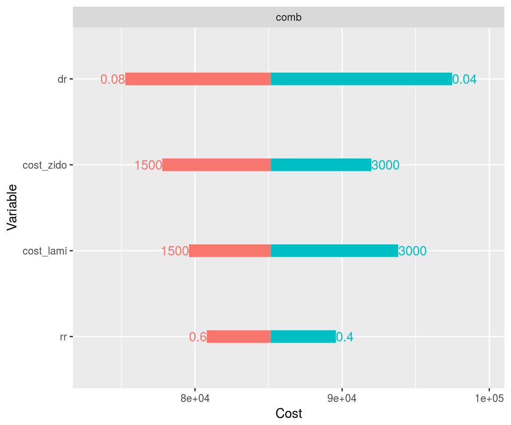
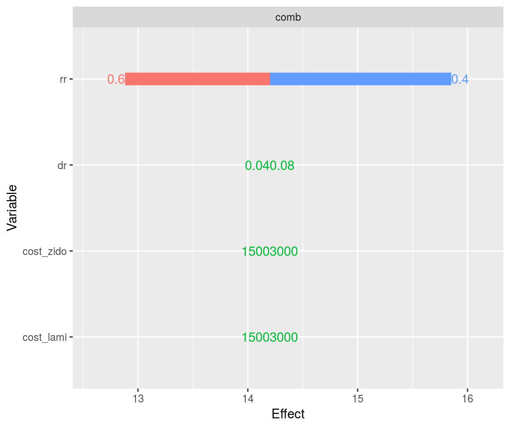
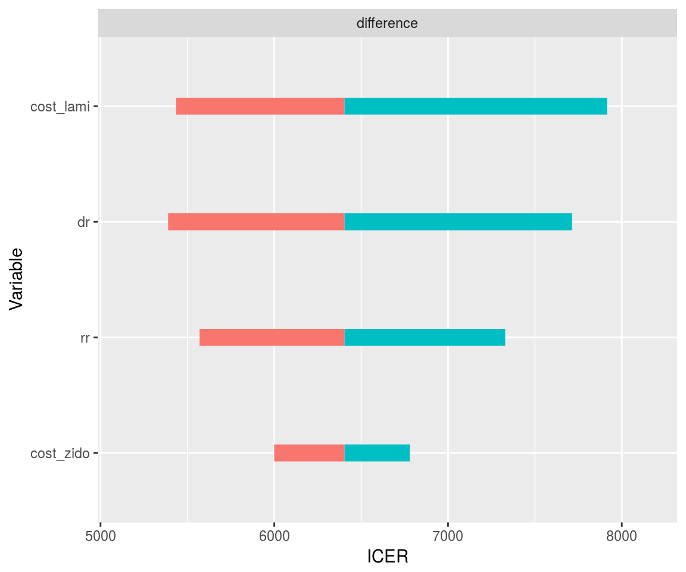

Deterministic Sensitivity Analysis
2017-05-12
Introduction
The objective of deterministic sensitivity analysis is to assess how model results are sensitive to parameter values. Parameter values are changed through upper and lower bounds, and the results are reported.
Sensitivity analysis is distinct from probabilistic uncertainty analysis: whereas in PSA the objective is to estimate the effect of global uncertainty on model results, in DSA the objective is to assess the sensitivity of results to variations of individual parameters. Both analyses are complementary.
Define the analysis
This example uses the HIV drug model defined in vignette("e-probabilistic", "heemod"). See this vignette for an explanation of the model. Note that as in PSA, parameters need to be defined in define_parameters() in order to be modified in a DSA.
In this example we will study the sensitivity of cost to 4 parameters:
-
rr, the relative risk associated with the new treatment. -
cost_zidoandcost_lami, the drug costs. -
dr, the discount rate.
Upper and lower values for the paramters are given to define_dsa().
se <- define_dsa(
rr, .4, .6,
cost_zido, 1500, 3000,
cost_lami, 1500, 3000,
dr, .04, .08
)We then run the sensitivity analysis with run_dsa(), using res_mod the result from run_model() as input.
res_dsa <- run_dsa(
model = res_mod,
dsa = se
)## Running DSA on strategy 'mono'...## Running DSA on strategy 'comb'...Interpretation
All the results can be displayed in a table.
res_dsa## A sensitivity analysis on 4 parameters.
##
## Parameters:
## -rr
## -cost_zido
## -cost_lami
## -dr
##
## Sensitivity analysis:
##
## cost_health cost_drugs cost_total life_year
## mono, cost_lami = 1500 46725886 19279596 48417031 8463.387
## comb, cost_lami = 1500 71019861 53642502 79593035 14198.651
## mono, cost_lami = 3000 46725886 19279596 48417031 8463.387
## comb, cost_lami = 3000 71019861 74940478 93812382 14198.651
## mono, cost_zido = 1500 46725886 12695081 43363208 8463.387
## comb, cost_zido = 1500 71019861 50916361 77772959 14198.651
## mono, cost_zido = 3000 46725886 25390162 53107083 8463.387
## comb, cost_zido = 3000 71019861 72214337 91992306 14198.651
## mono, dr = 0.04 46725886 19279596 53238469 8463.387
## comb, dr = 0.04 71019861 61962911 97480846 14198.651
## mono, dr = 0.08 46725886 19279596 44351921 8463.387
## comb, dr = 0.08 71019861 61962911 75259528 14198.651
## mono, rr = 0.4 46725886 19279596 48417031 8463.387
## comb, rr = 0.4 74749377 69178956 89573275 15852.190
## mono, rr = 0.6 46725886 19279596 48417031 8463.387
## comb, rr = 0.6 66652719 56216918 80800674 12881.970
## .n_indiv .par_value_eval Cost Effect ICER
## mono, cost_lami = 1500 1000 0.40 0.00 0.000000 -
## comb, cost_lami = 1500 1000 1500.00 31176.00 5.735263 5435.845
## mono, cost_lami = 3000 1000 0.60 0.00 0.000000 -
## comb, cost_lami = 3000 1000 3000.00 45395.35 5.735263 7915.129
## mono, cost_zido = 1500 1000 1500.00 0.00 0.000000 -
## comb, cost_zido = 1500 1000 0.04 34409.75 5.735263 5999.681
## mono, cost_zido = 3000 1000 3000.00 0.00 0.000000 -
## comb, cost_zido = 3000 1000 0.08 38885.22 5.735263 6780.024
## mono, dr = 0.04 1000 1500.00 0.00 0.000000 -
## comb, dr = 0.04 1000 0.04 44242.38 5.735263 7714.097
## mono, dr = 0.08 1000 3000.00 0.00 0.000000 -
## comb, dr = 0.08 1000 0.08 30907.61 5.735263 5389.047
## mono, rr = 0.4 1000 0.40 0.00 0.000000 -
## comb, rr = 0.4 1000 1500.00 41156.24 7.388802 5570.083
## mono, rr = 0.6 1000 0.60 0.00 0.000000 -
## comb, rr = 0.6 1000 3000.00 32383.64 4.418583 7328.966
## Cost Diff. Effect Diff. Ref. .nmb .dnmb
## mono, cost_lami = 1500 - - - 0.0 -
## comb, cost_lami = 1500 31176.00 5.735263 mono 140881.9 140881.9
## mono, cost_lami = 3000 - - - 0.0 -
## comb, cost_lami = 3000 45395.35 5.735263 mono 126662.5 126662.5
## mono, cost_zido = 1500 - - - 0.0 -
## comb, cost_zido = 1500 34409.75 5.735263 mono 137648.1 137648.1
## mono, cost_zido = 3000 - - - 0.0 -
## comb, cost_zido = 3000 38885.22 5.735263 mono 133172.7 133172.7
## mono, dr = 0.04 - - - 0.0 -
## comb, dr = 0.04 44242.38 5.735263 mono 127815.5 127815.5
## mono, dr = 0.08 - - - 0.0 -
## comb, dr = 0.08 30907.61 5.735263 mono 141150.3 141150.3
## mono, rr = 0.4 - - - 0.0 -
## comb, rr = 0.4 41156.24 7.388802 mono 180507.8 180507.8
## mono, rr = 0.6 - - - 0.0 -
## comb, rr = 0.6 32383.64 4.418583 mono 100173.8 100173.8Two distinct plot types are available. The basic plot (type = "simple") displays cost variations for each model, around the base cost.
As expected mono model costs are not senstive to cost_lami, since this drug was not given to this group. Similarly it is not sensitive to rr, because this parameters only modifies transition probabilities in the other model.
plot(res_dsa,
strategy = "mono",
result = "cost",
type = "simple")On the other hand the comb model cost is sensitive to all 4 parameters.
plot(res_dsa,
strategy = "comb",
result = "cost",
type = "simple")
And its effectiveness is sensitive to rr
plot(res_dsa,
strategy = "comb",
result = "effect",
type = "simple")
The difference plot (type = "difference") displays the difference between the specified model comb and the reference model mono.
plot(res_dsa,
strategy = "comb",
result = "cost",
type = "difference")
plot(res_dsa,
strategy = "comb",
result = "icer",
type = "difference")It is also possible to leave the high and low parameter values off the plot:
plot(res_dsa,
strategy = "comb",
result = "icer",
type = "difference",
limits_by_bars = FALSE)